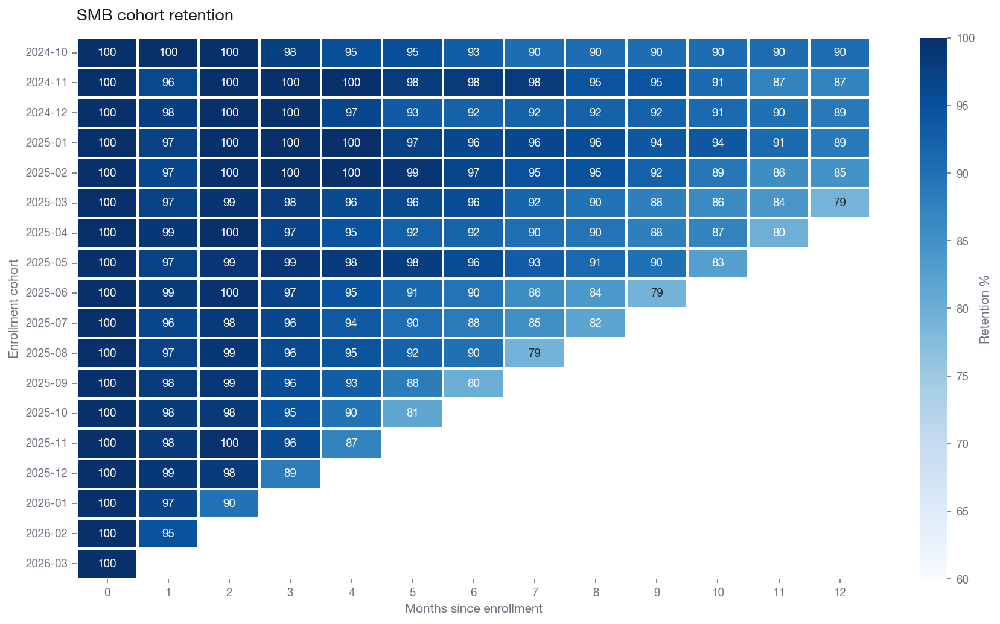
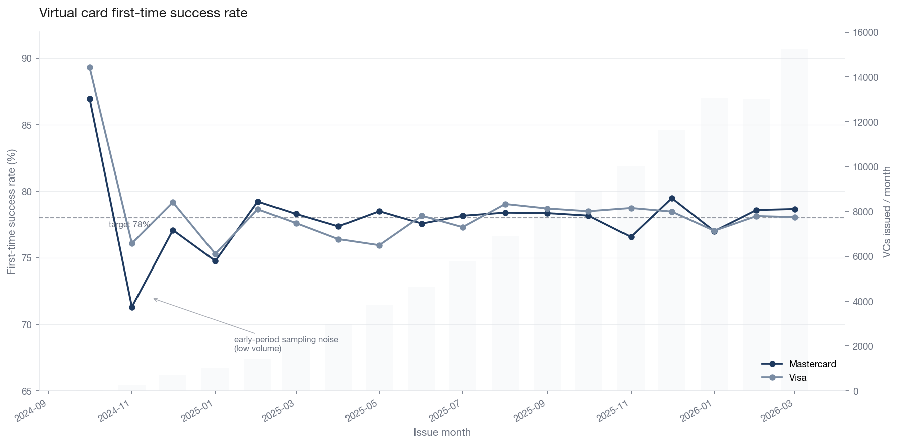
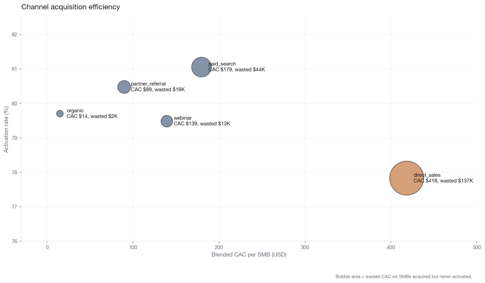
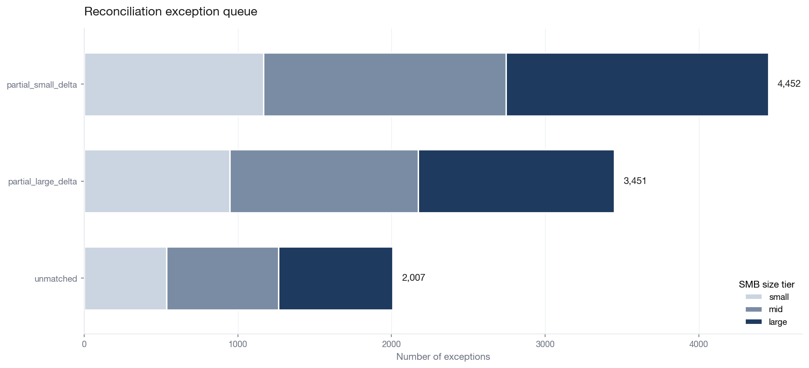

Four marts on a 351,270-row synthetic payments event stream covering 4,942 SMBs across 18 months. Built to answer the unit-economics, virtual-card lifecycle, retention, and reconciliation questions a BillGO DA Engineer team would own post-pivot.
SMB cohort retention
Cumulative % of enrolled SMBs still transacting by month N

Virtual card first-time success
Monthly rate by card network, against the 78% target

Channel acquisition efficiency
Activation rate vs. blended CAC; bubble area = wasted CAC

Reconciliation exception queue
Captured invoices requiring Ops review, by severity and SMB size

Planted bugs caught before reaching marts
Two realistic data-quality bugs were intentionally planted in the generator and caught by the pytest suite before any mart rebuilt on top of the corrupted raw data.